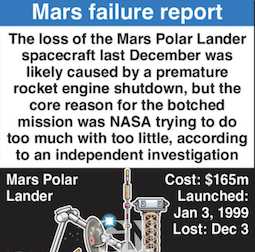

Investigation: Why the Bug Wasn't Caught
The post-failure investigation, led by John Casani, concluded that the premature engine shutdown was the most likely cause. The key question was how such a simple but catastrophic bug was missed. The investigation pointed to severe budget and time constraints from NASA's "faster, better, cheaper" initiative, which had drastically reduced the budget for rigorous, end-to-end testing.
The "false touchdown" scenario was a classic case of an integration testing failure. The team that built the landing legs and their sensors was separate from the team that wrote the flight control software. While both components worked perfectly on their own, *no one had ever tested them together in a realistic, full-scale simulation*. The software team had simply "simulated" the sensor data, not anticipating a false signal could be generated by the hardware's normal operation.
Shockingly, the investigation board discovered that this exact problem—the legs deploying and falsely triggering the touchdown sensors—had actually occurred during a test on an engineering model (a "test-bed") months before launch. The test engineers who saw it assumed it was a hardware glitch or a sensor problem, not a software flaw. They failed to report the anomaly to the software team, and the critical data point was lost. The bug was known, but the communication breakdown and lack of integrated testing meant it was never fixed.